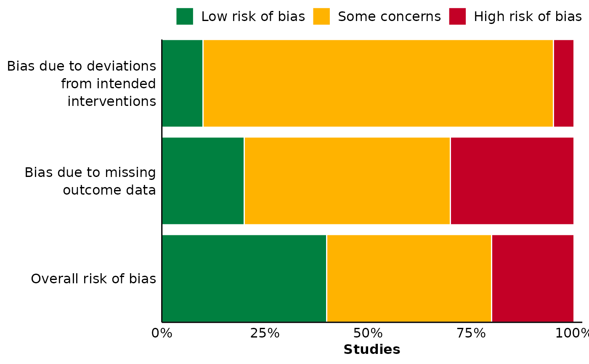

Plot summary of RoB2 assessments
plot_rob2_summary.RdThe RoB2 tool,
developed by the Cochrane Collaboration, allows assessing the
risk of bias in randomized trials. In addition to a study-level traffic light
plot, a typical output of RoB2 assessments is a summary of the proportion
of studies with a specific bias risk, per domain. This latter type of plot is
created by plot_rob2_summary, which requires summarized data (i.e., no
data synthesis or calculations are performed by the function).
Arguments
- data
A data.frame.
- domain
Unquoted column name for the bias domains.
- judgement
Unquoted column name for the risk of bias judgement.
- study_share
Unquoted column name for proportion [0, 1] of studies with a specific bias risk per domain. Values in this column must all be numeric.
Examples
library(ggplot2)
data_rob2 <- data.frame(
domain = rep(
c(
"Overall bias",
"Bias due to deviations from intended interventions",
"Missing data"
),
each = 3
),
judgement = rep(c("Low", "Some concerns", "High risk of bias"), times = 3),
study_share = c(0.4, 0.4, 0.2, 0.1, 0.85, 0.05, 0.2, 0.5, 0.3)
)
plot_rob2_summary(
data_rob2,
domain = domain,
judgement = judgement,
study_share = study_share
)
#> Warning: There was 1 warning in `dplyr::mutate()`.
#> ℹ In argument: `plot_domain = forcats::fct_relevel(...)`.
#> Caused by warning:
#> ! 3 unknown levels in `f`: Bias in selection of reported results, Bias in outcome
#> measurement, and Bias arising from randomisation process
